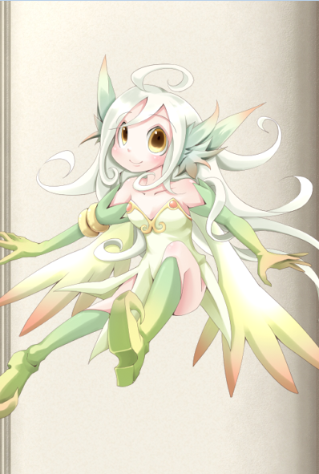

勇者稱號
輸給魔物娘就會被侵犯哦
▓▓▓▓背景▓▓▓▓
這是一個人類與魔物共存，天使們高居天界的世界。創世女神伊莉婭絲和初代魔王愛麗絲菲茲一世誕生于混沌，作為圣素和魔素兩種對立元素的濃縮體，兩個人劃土而治，伊莉婭絲誕生伊始處于孤獨，創造了自己的兩個分身：米卡艾拉和露西菲娜，但分身太過于相像自己，伊莉婭絲開始追求“相似而不同”的分身，也就慢慢創造出了天使。
另一方面，魔王愛麗絲菲茲與伊莉婭絲不同，她擁有更加直接的手段——通過影響基因變異來改變生物進化的方向，因此也就擁有了以六祖為首的更加強大色氣的魔物。
伊莉婭絲和愛麗絲菲茲的沖突隨著時間漸漸激化，終于到了無可復加的地步，于是爆發了一次圣魔大戰。
這場戰爭最終以愛麗絲菲茲和六祖選擇了自我永久封印最終。但有一個限制：如果世界上的魔素與圣素失衡（伊莉婭絲違反協定屠殺魔物），封印就會自行解除。而實力疊加起來遠超于伊莉婭絲的初代魔王和六祖也就會向伊莉婭絲發動復仇。
而在五百年前，“暴君”愛麗絲菲茲八世迷失于強大的支配欲，對世界造成了極大的破壞和混亂，第一代傳說勇者海里因希手持露西菲娜制造的魔劍高格，并與支撐世界的四大元素的象征希爾芙，諾姆，溫蒂尼，薩萊曼達簽訂契約，以之斬殺了“黑之愛麗絲”，后又沖上天界手刃了大量天使后，身體圣素化被魔劍高格吞噬了肉身。
五百年后，為了尋求人類與魔物娘共生之道，因此要前往魔王城打敗當代魔王的勇者魯卡，在當代魔王愛麗絲菲茲十六世友情贈送了魔劍高格并教導了四種戰技后，踏上了和海里因希相同的道路，集齊了四大精靈并簽訂契約，在魔王手下四大天王風之阿露艾露瑪，土之玉藻，水之艾露貝提耶，火之古蘭貝莉婭的細心教導下，終于掌握了四大精靈的運用。然后沖入了魔王城打敗了四大天王及魔王愛麗絲菲茲十六世，并隨后殺上天界斬殺了創世女神伊莉婭絲。
有高級輪回者曾經進入過這個世界，并根據魯卡的經歷和掌握的能力創造出了這一套傳說勇者訓練法。
由于該世界的四大精靈象征著世界的四大元素，因此具現出來太過昂貴，不符合輪回者的量產化需求，因此由另一個施法者輪回者研究出了替代品的精靈的召喚儀式，并能通過強化儀式逐級強化上去。
▓▓▓▓能力▓▓▓▓
強化要求：只有男性才能進行這個強化。
D級：
精力：這是構成人體的基本物質，也是人體生長發育及各種功能活動的物質基礎。《素問·生氣通天論》：“陰平陽秘，精神乃治，陰陽離絕，精力乃絕。”
你開啟精力能量池，它的關鍵屬性是感知+耐力，恢復方式是通過一次1小時的休息，做一個關鍵屬性的判定，恢復等同于成功數的點數。以此方式每日回復的能量不可超過能量池3倍數值。或者通過一次長休息完全恢復。
血氣旺盛：你的精力和血氣是如此旺盛，以至于擁有低配版拳修武圣的能力……你會格外吸引喜食陽氣的生靈，以及所有的魔物娘。她們會本能地察覺到你的精力對她們的好處。
當你被魔物娘擒抱住時，她可以以標準動作榨取你的精力恢復自身。這一般需要消耗15分鐘時間，完成后你會損失1點精力并且一點完好生命轉為嚴重，她可以恢復等同于你的稱號等級點嚴重傷害，若嚴重槽完好則可恢復惡性傷害。這段時間內你和她都將沒有動作可以行動，若是對方想縮短時間的話，可以進行一次智力+運動（專業：侍奉）的判定，你以強韌檢定抵抗，她的每一個勝出數都將會縮短一半的時間（最低為一秒）。這個判定在一次補魔中只能進行一次。
PS：這個特性中的魔物娘的判定僅是非人類的女性，有部分人類血統部分人外血統的也算。只限這個特性。
注意：成功使用這種方法會使你和對方立刻并且無可挽回地失去貞潔誓言或類似能力所帶來的獎勵。
C級：
戰斗本能：以孱弱的人類之軀對抗擁有各種能力的魔物，你必須掌握應付各種突發情況的能力，自己沒反應過來，就讓身體自行做出選擇，你免疫B級及以下的措手不及。
戰斗直感：身經百戰的你對危險的感知額外敏銳，特別是暗地里的冷箭。你忽視8點高速優勢。
B級：
戰斗理論·守：多年的戰斗經驗讓你總結出了一套應對魔物的方法，不同于高階魔物強大的肉體，你只要被擊中就會受到嚴重的傷勢，戰斗力明顯的下滑。因此你必須先保護好自己，再去窺探敵人的破綻。你獲得心眼·真。
二十年如一日：在與魔物的戰斗中，你只能依靠你手中的武器來抵抗魔物的各種超凡能力，并用它打敗敵人。二十年專注如一的揮動你的武器，讓你對你的武器更加了解，你知道如何使用它會加大它的殺傷性，你的白刃檢定獲得8加骰。
A級：
戰斗理論·攻：身為人類的局限性，注定著你與高階魔物戰斗時是拖不起的，它們的恢復能力相當驚人，你只能趁著找到它們的破綻的時候，出其不意，攻其不備，在最短的時間內斬殺它們。你的白刃攻擊獲得A級措手不及的效果。
真實之眼：長期與魔物的交戰過程中，你獲得了看破一切幻象的能力，任何魔物在你的眼中都無所遁形。你免疫A級幻象來源的能力，并且能如同火眼金睛一般能直接看穿你看到的任何事物的偽裝，視為看破A級變形效果的能力（僅能看破，不能免疫），同時你還擁有靈感視覺和黑暗視覺，能夠看透非超自然的煙霧。
▓▓▓▓精靈契約▓▓▓▓
你同時只能展現等于你稱號等級（D1C2B3A4）只精靈，而且希爾芙，諾姆，溫蒂絲，薩拉曼達具有唯一性，每一小隊只能存在一只。
它們也有自己的世界觀和人生觀，有自己的智慧。簽訂契約后，平時它們會居住在你的心里，共享你的感官并對你的遭遇發表評論，在你有需要的時候可以消耗一定的精力（見描述）以自由動作將它們召喚出來，切換精靈則是一個迅捷動作而且一輪只能切換一個精靈。
最初的精靈需要購買D+500的召喚儀式并進行召喚，之后需要通過相應的強化儀式逐級進化精靈。如果ST開放造物的話則可以通過造物自行布置這個儀式并省下材料費，但是這個儀式必須由本人進行布置，因此別人無法幫你省下這筆錢。這個儀式視為魔幻本質的奇物。
希爾芙

描述：智商不高而夢想遠大的風之大精靈。她的魔力遠遠高于普通的精靈，但是好像并不怎么擅長戰斗。雖然擁有龐大的魔力和能夠掌握風的力量，但是似乎也不會有效的運用。盡管如此，希爾芙對付普通的冒險者還是綽綽有余的。
和其他小妖精一樣，很喜歡惡作劇，特別喜歡玩弄男性的……（中間略）……利用風的力量和身體淘氣的玩弄……（中間略）……用于補充自己的魔力。
平常是以實體的方式出現，也可以變為靈魂體，所以能夠以靈魂體的形式附在人類的肉體上，這便是希爾芙將力量借給人類的存在方式。但是，想要將希爾芙的力量運用自如可不是那么容易的事。所以，精靈只會把力量借給自己認可的人。
另外，所依附的人類在睡眠或因憤怒、欲情失去平常心的場合，與精靈的鏈接會暫時切斷。若變成這樣的話會連希爾芙的聲音都聽不到，希爾芙也會無法探知宿主的情況。
與大自然本身有所感應，若不慎傷害她的話甚至會對全世界的氣象產生影響。
D級：
“希爾芙，借給我力量”
被動特性：風之感知：全身流淌著不可思議的力量，就好像自己的身體和周圍的風混為了一體，并清晰感覺到體內有風的氣息，用耳聽著風聲，就能像親眼所見似的感知到周圍的一切情況，你獲得盲感，這是D級特異本質的偵測能力。
啟動消耗精力：2點
風之守護：啟動時周圍5米內吹起強烈的風，風之力環繞著你，并將敵人的攻擊吹開。你的閃避防御增加1點，對抗范圍的判定也獲得1點閃避加值。
特殊，它對掙脫阿溫娜等植物系魔物娘的擒抱有奇效，你可以消耗1點精力和一個移動動作，移動你的敏捷值/米。你可以用此能力擺脫類似于擒抱，蛛網術等限制行動的效果。
這個階段也就只能把風當屏障用了，要做到寄風于行，才能將風的力量化為極致。
另外：若是你的操縱值只有1點的話，你在使用希爾芙的力量的時候會被自己召喚的風卷飛，這會使你每輪損失一個整輪動作。
選開：風之力的使用：D+500，對植物系的敵人有很好的相性，讓植物類的魔物的技能幾乎全部無效化。用風之刃切開它的藤蔓，用風之力吹開它的花粉，用暴風吹散它的香氣……你免疫D級基于植物類的能力對你的效果。
當希爾芙的等級提高到C/B/A級時，你可以補上相應的差價將它提到C/B/A級，并免疫C/B/A級基于植物類的能力。
C級：
“將這身體化為疾風”
被動特性：風之嬉戲：與以往不同的是——周圍沒有刮起大風，但身體里，充滿了風的力量……你的偵測能力提高到C級，同時你的閃避防御和對抗范圍的判定再增加1點閃避加值。
啟動消耗精力：2點
新增特性：寄風于行：風之力的支配力上升，將風寄宿于行。你的移動速度增加20米，白刃攻擊提升5點高速，能夠宛如子彈一樣快速的揮動武器。
B級：
“希爾芙，吹起咆哮的狂風吧”
被動特性：風之感知：現在風成為了你的眼睛，它流動的地方你都會如同親眼看到，聽到，接觸到一般。你的盲感能力提升為盲視，并且偵測能力提高到B級，
啟動消耗精力：1點
疾風之咆哮：啟動時，你的周圍會吹起咆哮的狂風。此時將風之力的極致寄宿于行，你將有更多的攻擊回避，并且可以普通攻擊連續攻擊兩次。
現在，你的閃避防御和對抗范圍的判定再增加4點閃避加值。同時，你可以以一個整輪動作連續進行兩次普通白刃攻擊。
同時，你的身體仿佛變成了風一般，想飛向哪里就飛向哪里，你獲得了等同于你的基礎速度的飛行能力，機動性完美。
A級：
即然以前一樣的契約沒有效果，那就使用更強力的契約。
那是對契約所必要的儀式，不只是精神，也要用肉體締結契約。
之后，希爾芙的力量會完全歸屬于你。
啟動消耗精力：0點
特性提升：風之感知：只要世界上仍然存在【空間】這個概念，你就能用風之感知來替代你的五感，你的偵測能力提高到A級，并且敏感范圍擴大一倍。
特性提升：疾風之咆哮：你與希爾芙融為一體，現在你就是大自然的風之化身，如果別人閉上眼睛，用其他能力來感知你，他會覺得你化為了一道暴風，并且現在你在科技類的攝像頭，魔幻類的留影儀中的身影永遠只會顯露出一道待在原地的風暴的影象。這是因為強大的風之力量的氣息干涉世界，所以，除非你刻意收斂，否則影像魔法陣記錄到的只能是這樣，而這種情況在正常肉眼所見時卻不會出現。
現在，你的閃避防御和對抗范圍的判定再增加8點閃避加值，風之力時時縈繞在你的周圍，你就算不刻意做出躲避，風也會幫助你躲開敵人的攻擊，這會令你在判定上一直處于全力防御狀態（當然，你不能全力防御再全力防御）。同時，你可以以一個標準動作連續進行兩次普通白刃攻擊（取代B級特性）
每輪一次，當你受到攻擊前可以以一個反射動作進行一次瞬間移動，移動范圍為你的基礎速度內，這會讓你有可能離開敵人的攻擊范圍，也可以讓你擺脫類似于擒抱，蛛網術，結界，囚籠等限制移動的能力。這是A級時空來源的效果。
特性提升：寄風于行：將風之力完美寄宿于行動中去，你將不受外在環境的影響，你處于寄風于行狀態時，免疫A級環境來源的效果。
諾姆
描述：三無屬性的土精靈。擁有龐大的魔力，可以自由操縱泥和土，但是不擅長戰斗。那么龐大的土之魔力也只是閑著拿來做人偶玩的而己。以魔素為基礎能量，姑且也算是魔物的一種，乃是寄有精神的大自然本身的存在。
在數百年前還在薩法魯一地作為大地之神受人信仰，但在女神信仰成為主流的現在己無人祭祀，被徹底忘切。因此，意外地擁有容易感到寂寞的性格。
一般都以實體的形式存在，平時就在沙漠玩耍。也偶爾去綠洲游蕩一下。碰見人類的男性的話，會先躲在一旁偷偷觀察。
……（該段略）……
如果力量被諾姆所承認，諾姆就會將力量借給冒險家。之后，諾姆會變為靈魂體依憑在冒險者的身體上，讓冒險家能夠使用土之力理。
因為特別喜歡安穩的靜寂，所以經常扇吵吵鬧鬧的希爾芙的巴掌。這姑且，也算是諾姆風格的親切的證明。話雖如此，不要忘記，她還是有真正抑郁的時候。
D級：
“諾姆，把力量借給我”
啟動消耗精力：2點
大地之力：隨著你的一聲低喝，強大的力量，從你的身體中涌出，那是充滿了大地氣息的剛力！你的力量檢定和耐力檢定分別增加2點增強加值。同時土之力改變著你的身體，你免疫C級創傷來源的效果。
土精靈的力量比風精靈的力量更難用，如果一個不小心，自己被卷進其中也是很有可能的，要想運用土精靈的力量，你必須擁有至少3點操縱，否則運用土精靈的力量攻擊時不會對敵人造成傷害，而是對自己造成傷害，因為是來自自己的攻擊，因此你對于這次攻擊失去基防和閃防，格擋防御。
C級：
“將大地的氣息充滿全身……”
啟動消耗精力：2點
大地的氣息：與之前使用土之力的感受完全不同，自己的身體就像變成了堅韌的大地那樣，源源不斷的力量自身體里涌出，你的力量檢定和耐力檢定的增強加值提升到4點，并且你獲得顫栗感知的能力。
新增特性：寄土于身：土之力的支配力上升，大地的氣息寄托于身，防御力提高，你的天生防御提升4點，此外，你還免疫C級毒素來源的效果。
B級：
“諾姆，展現荒蕪大地的力量”
啟動消耗精力：1點
荒蕪大地：將土之力的極致寄宿于身，幾乎不受物理攻擊，其他攻擊的傷害也大幅度減小。
啟動時你不會被普通物理行為影響或傷害到。但具有『魔法』『能量』『力場』『幽冥』等特性的行為都可以正常傷害或影響到你。
你的力量檢定和耐力檢定的增強加值提升到8點。
同時你獲得等同于你的耐力附加成功數的全傷害吸收能力。
A級：
即然以前一樣的契約沒有效果，那就使用更強力的契約。
那是對契約所必要的儀式，不只是精神，也要用肉體締結契約。
之后，諾姆的力量會完全歸屬于你。
啟動消耗精力：0點
特性提升：荒蕪大地：只要世界上仍有【物質】這個概念，就會有源源不斷的力量提供給你，你的力量檢定和耐力檢定的增強加值提升到16。
特性提升：寄土于身：雖然你的體型和外表沒變，但你光是站在那里，就給人一種山岳橫在眼前的感覺。強大的土之力量保護著你：你的天生防御再提升等同于你的耐力值的數值，并且獲得6DR/-，10點封閉特性，防彈防能量效果（關于封閉特性的判定上，視你的天生防御為盔甲防御，防彈防能量和DR/-效果都是基于你的天生防御的）
溫蒂妮
笨蛋是看不到溫蒂妮的圖片的
描述：在名為【溫蒂妮之泉】的地下洞窟中，躲避世人目光靜靜生活著的水精靈。以前還會在人類面前出現，現己經完全隱居不出了。
討厭污染世間水域的人類，對于接近的人類會毫不留情地吃掉。被溫蒂妮的身體包住的男人，會被一邊……（略）……，一邊被粘液構成的身體同化，最終被完全吸收。
不過盡管討厭人類，對很久以前與人類共存的生活好像也仍有懷戀。
自身習得明鏡止水之心，其戰斗力極高。與薩萊曼達的關系不佳。
D級：
“溫蒂尼，借給我力量”
水之流動：你可以感到體內有類似水流的東西，并形成潮流向外界延展開去，好似和世界的流動交聯在了一起。這是一種能量感知方式，你可以感知到能量的流動，并直接判斷出它的支線等級強度，多種不同的能量的流動方式在你的視野中也是不一樣的，越強的能量流動的速度也就越快。這屬于新增的感知方式而非偵測能力。
啟動消耗精力：2點
水之屏壁：啟動時你可以用水構成墻壁防御敵人的攻擊，這會提供給你微弱的減傷效果，這會給你帶來2點偏斜防御和2點對抗范圍的判定上的偏斜加值。
水流映出心的影子——就是指寄水于心。
針對水之力的修行：D+500，然而上面那種水之力的用法從根本上就錯了，應該把心投影到水的流動中，因此要進行精神上的鍛煉。
方法是：首先，雙腿盤起來，打坐。然后，心無旁鶩，將精神委托于流水，很快，你就能察覺出周圍的流動中，似乎有殺氣混雜在其中，并感知到自己心中的特殊流動。
通過這種方法，能夠感知到自己敏感范圍內的針對自己的不加掩飾的殺意的具體位置和強度，這并不僅僅對生物有效，即使是自動機槍，也會被你的心靈感應捕捉到，這不會給你帶來偵測能力，但可能有劇情上的效果。這意味著如果你的敏感范圍內別人不加掩飾的對你散發著殺意，也不進入潛行狀態，那么你可以立刻察覺并精確定位他。
同時你的反射檢定增加4點洞察加值。
這個技藝即使你不展現溫蒂妮，也能夠使用，因為這實質上是屬于你自身的能力。
C級：
“將心寄托于水的流動”
啟動需要精力：0點，但是每輪會消耗1點精力，直到精力耗光，當精力耗光時，你就會被水流彈回現實世界。
周圍的【流動】似乎出現在了你的內心中。空氣的流動，聲音的流動，力量的流動——森羅萬象的流動，全部投影在了自己的內心——那好像就是自己與世界融為了一體——
寄水于心：“水即是倒映內心的鏡子。明鏡止水，心如鏡，澈如水——”
將心寄托于水的流動中。以明鏡止水的狀態進行戰斗，你免疫C級影響心靈的效果，并獲得明鏡之步伐和止水之刃特性。
明鏡之步伐：面對敵人的攻擊，你就像看見了水流中的一顆落葉，像水的流動一樣，自然而然地避開了。你的防御和對抗范圍的判定上再獲得2點偏斜加值。
止水之刃：宛如流水一般，將劍揮出，你能輕易地斬開巨龍的鱗甲，這不是依靠蠻力斬開的，而是水之力量，你的白刃攻擊提升6點破甲。
B級：
“我的心，毫無迷惘……”
啟動需要精力：4點
明鏡止水：寄水于心，明鏡止水的極致形態。清流透明的心，就是明鏡止水的極致！你免疫B級影響心靈的效果（取代C級效果），同時你不會被虛招所欺騙，任何A級及A級以下的虛招類能力對你通通失效，視為對抗中你總是自動成功。
明鏡之步伐：你處在驚人安靜的水流之中，仿佛進入了時間停止的空間之中，這就是，明鏡止水的極致，若是有多個人擁有明鏡止水的能力，那么他們在戰斗中會互相感應到對方掌握這個能力，這個感應能力不是偵測能力，因此不能幫各自定位對方，你的防御和對抗范圍的判定上再獲得4點偏斜加值，同時你將免疫B級時空來源的能力。
止水之刃：你的心再無迷惘，你的劍亦如是，你能用止水之刃切開火球，破掉結界。你的白刃攻擊提升6點破魔。
關于明鏡止水的修行：雖然沒有溫蒂妮在身邊，依然掌握了明鏡止水的心境。對敵人的閃避增加。
即使不展現溫蒂妮，你也能擁有明鏡止水的心境，并且掌握相關的能力：
明鏡之步伐：C+1000：你依靠明鏡止水之心開發了一套屬于你自己的步法，這讓你更容易閃躲敵人的攻擊。你的閃避防御增加4點，并且運動技能變成9加骰。
止水之刃：C+1000，依托明鏡止水的心境，止水之刃讓你的白刃技巧越發純熟的同時，也能斬斷你自己的迷惘。你的白刃判定額外提高4點技藝加值，同時你被動進行的意志檢定變為9加骰。
“我的心，澄澈如水。”
清澈的心，達到了明鏡止水的極致。
A級：
即然以前一樣的契約沒有效果，那就使用更強力的契約。
那是對契約所必要的儀式，不只是精神，也要用肉體締結契約。
之后，溫蒂妮的力量會完全歸屬于你。
啟動消耗精力：0點
洞敵冰心：這是明鏡止水的一種運用方法，明鏡凝結在水海，映照出周圍的景象，這個景象內，森羅萬象的流動變化，你都了解于心，讓你能提前判斷，做出響應。你的防御和對抗范圍的判定上再獲得8點偏斜加值并且免疫S級措手不及。
虛空遇神，照見自我：你凝明鏡于心海，意如烈火，心如明鏡。這個狀態下你免疫A級影響心靈的負面效果（取代B級特性）。
特性提升：止水之刃：只要世界上仍有【時間】這個概念，你就可以感應森羅萬象的流動，然后順著流動斬過去，這一擊甚至能將巨龍吐過來的龍息劈開。你能夠以一個標準動作斬斷法術或超自然力量造成的結果，就如果“解除魔法”一般，不同的是，你以普通白刃攻擊檢定取代施法判定與對方的相關檢定進行對抗，對方效果等級每比A級高一級，攻擊檢定就受-3減值，若勝出則此效果立刻解消。
你也可以以一個反射動作施展止水之刃。
薩萊曼達
笨蛋是看不到薩萊曼達的圖片的
描述：有著絕高戰斗能力的炎之精靈。性格非常粗暴，其自尊心也非常高。身為魔物的同時也可說是大自然本身的存在，其身體若有異常的話，在世界范圍內燃燒化學反應會發生異變。平時在戈德火山的洞窟深處隱居，和外界完全沒有交流。不過在魔物之間是非常有名的猛者，有許多魔物希望能成為其門下弟子，不過其對于拜師要求基本都會一概拒絕。
也有很多戰士為了揚名而前來挑戰，薩萊曼達對于這些挑戰者會毫不留情將其擊敗。若對方是男人，更會加以徹底凌辱。……（中間略）……。因為并不愛好殺戮，不會將對方▓▓至死，在其快要衰弱而死的時候就會將其丟棄在洞窟外面。
對自己所認可的對手會發誓效忠，不過讓自尊心很高的薩萊曼達所承認當然不是件容易的事情。
和溫蒂妮之間與其說是關系惡劣不如說是互為對手，有時會拳腳相交，還未曾分出過勝負。
D級：
“薩萊曼達，把力量借給我”
啟動消耗精力：2點
烈火之刃：借助薩萊曼達的力量，點燃自己的斗爭心，若是將斗爭心昂揚至極限，便可催生出灼熱的業火，將此火炎寄在劍上，只要揮舞這寄宿有火精靈莎萊曼達的灼熱之劍，便可提高些許威力吧。你的白刃攻擊檢定獲得了2點士氣加值，你的白刃攻擊傷害可以轉換為火焰能量傷害，這種業火可以正常攻擊靈體，并使你手持的劍附帶【魔法】特性。
C級：
“將紅蓮業火召喚于此”
啟動消耗精力：2點
業火的劍技：將斗爭心燃燒到極致，產生出的灼熱的業火。現在使出的所有技能，都會帶著紅蓮之火，而且威力大增的劍刃，能夠撕裂任何敵人。你的白刃攻擊檢定再獲得4點士氣加值并且獲得幽冥屬性。
寄火于技：你所使用的劍技消耗的精力減少2點（最低為1），同時你的劍刃武器傷害提升3L，這是火焰能量加值。
B級：
“薩萊曼達，煉獄的火焰”
啟動消耗精力：4點
煉獄之魔技：火之力的極致，灼熱的業火寄宿于技。你的劍被灼熱的業火包圍著，全身都迸發著熱氣。從劍身發出巨大的力量，內心卻保持著平靜而不是以前的沸騰狀態，從此用平常心支配火之力就可以了。你DC級獲得的士氣加值轉變為表現加值并且再提高8點，你的劍刃武器傷害再提升6L。
并且這個狀態下你使用的本稱號下的劍技時，都會造成等同于成功數的燃燒點數。
A級：
即然以前一樣的契約沒有效果，那就使用更強力的契約。
那是對契約所必要的儀式，不只是精神，也要用肉體締結契約。
之后，薩萊曼達的力量會完全歸屬于你。
啟動消耗精力：0點
火之犧牲：薩萊曼達是大自然的火之化身，也是世界【能量】的象征。你可以以一個反射動作點燃自己，讓斗爭心突破極限。此時你的所有能量池都將處于滿值狀態，但是當你燃盡生命的時候你會無可避免地走向死亡，持續時間為你的生命值上限/分鐘。這一效果可以給別人使用，在他自愿接受此效果時，此時別人只能選定一個能量池始終于處滿值狀態，并且依據他的支線等級獲得同級薩萊曼達的加持（最高為A級），同樣只會持續他的生命值上限/分鐘，之后就會無可避免地走向死亡。
注：這個特性燃燒的不僅是你的生命，還有你的業力，因果……等等，因此一般來說，只有輪回者和有份量劇情人物才能接受這個效果，而且還需要是活著的生物。燃燒完自身后將會因為復活的手段和憑依也被一并燃盡了而無法復活。
特性提升：寄火于技：強烈的斗爭心與薩萊曼達產生共鳴，現在，她全部的戰斗經驗流淌入你的腦海中，你的戰斗技巧獲得了極大的飛躍：
你現在能以自由動作宣告進行一次白刃格擋，若你己有心眼·真，則你可以以自由動作替代移動動作使用心眼·真的效果。
你DCB級獲得的表現加值再提高16點，并且你用本稱號下的劍技攻擊敵人時，都可以輕易地繞開敵人的護甲和天防，這會讓你使用劍技時獲得【接觸攻擊】特性。
薩萊曼達一生與絕大多數魔物進行過爭斗，這讓她擁有對魔物戰斗的豐富經驗和理論，在她的輔助下，你可以在攻擊時以一個迅捷動作對受到攻擊的目標發動一次虛招，這次虛招用普通白刃攻擊檢定取代正常的虛招判定，只要敵人不是無智力的蠢物，它對幾乎所有類型的敵人都可以無減值進行虛招判定……除了薩萊曼達的對手，一直未與她分出勝負的擁有明鏡止水之心的溫蒂妮。這是A級的虛招效果，替代正常的虛招效果，轉為使敵人面對你這一次攻擊時近戰攻擊時，在格擋防御上承受你勝出數的的減值，沒有上限。
紅蓮業火：業火不僅僅只能對敵人使用，你也可以用業火灼熱自身，燃燒自己的罪孽，劫盡琉璃生，意如烈火，心如明鏡。你免疫S級的詛咒來源的能力。
▓▓▓▓技能樹▓▓▓▓
“寄風于行，寄土于身，寄水于心，寄火于技——能做到這些，才能將精靈的真正力量充分發揮出來。”
——BY 海因里希
（他領悟了這些后，消滅于當時的魔王，被稱為【黑之愛麗絲】的暴君，愛麗絲菲茲八世）
由于第一代勇者海因里希的劍技于500年前己失傳，主神收錄的是第二代勇者魯卡成長過程中掌握的劍技。
魔劍·斬首
價格：D+500
前置：長劍，騎士劍
“就這樣，要充分利用腳步配合。劍這種武器，并非只需要腕力。”
撲向敵人懷中，并向其喉嚨斬擊的劍技，非常容易使用，無論對怎么樣的對手都能發揮效果的穩定技能。黑暗精靈妖劍士扎克斯用此技斬下了數百人的頭顱，譜寫了一段輝煌的傳說。
消耗1點精力和一個整輪動作，對你移動速度內的一個敵人的咽喉發起沖鋒，這次攻擊不承受部位減值，對方以反射相對抗，每勝出1點成功數造成1點嚴重傷害，最后再計算攻擊咽喉的特效。
被這招擊殺的敵人的頭顱會被你斬下來。
雷鳴突刺
價格：D+500
前置：長劍，騎士劍
“就是這樣……要穩定住上半身！不要晃動！”
疾風魔劍的使用者【涂血的費爾南迪斯】的得意劍技，血裂雷鳴刺。費爾南迪斯所刺殺的敵人之多以致于在地面上匯聚成了一面湖。
魯卡覺得這個名字太惡心和血腥，因而將它的名字改為【雷鳴突刺】
“這個劍技正如其名，像閃電般地刺過去，在戰斗剛開始的那一刻能發揮最大的效果，其他時間就比普通的攻擊強一點。”
消耗1點精力和一個標準動作，迅速向敵方突刺過去，由于劍快近音，破空聲如同雷鳴一般，讓人反應不過來因而得名。這次攻擊帶有D級措手不及以及2點高速，若是在戰斗的第一回合發動，則提高到C級措手不及以及6點高速。
被這招擊殺的敵人心臟將會被刺穿。
天魔頭蓋斬
價格：D+500
前置：長劍，騎士劍，要在高空中才能發動，或者附近需要有能夠攀登的地方才能使用。
“一般來說，在戰斗中高跳是自殺行為，但這個天魔頭蓋斬是不同的。以無法捕捉的速度落下，砸碎敵人的腦袋。”
天魔頭蓋斬有著“有翼死神”之稱的哈比魔物迪斯萊亞的劍技，她用此技敲開了三百人的腦殼，在大地上灑滿腦漿。
消耗1點精力和一個整輪動作，從高處飛身而下猛斬向對方頭部。進行一次移動后立即對身前的敵人進行一次攻擊，這次攻擊附帶【眩暈】和【威猛6】的特性。并且這不是沖鋒，因此不享受沖鋒的好處和壞處。
被這招斬殺的敵人的腦袋會被砸碎。
死劍·亂星
價格：D+500
前置：長劍，騎士劍
“無數斬擊的沐浴，對敵人劍舞般的攻擊，這就是死劍·亂星。”
創出此技的六手劍士迦拉曾經將一整個騎士團變成肉塊。
花費1點精力，以標準動作揮出縱橫無盡的斬擊，每一斬都銜接得毫無空隙。當你進行攻擊時，攻擊一個目標的同時對其相鄰的敵人進行斬擊，視為【連射】特性，這些敵人也必須在你的觸及范圍內并正常按照連射規則承受減值。被你攻擊的敵人還會承受等同于【連射】DP加值的多次攻擊減值。
瞬劍·迅雷疾風
前置：雷鳴突刺
價格：DD+500（由雷鳴突刺補差價進化而來，這個技能會代替雷鳴突刺的位置，因此強化后不能繼續使用雷鳴突刺了）
“你在戰斗中也可以比較好地使用風的力量了。現在的你，應該可以將風之力運用在劍術上了。”
“關于這個技能……像往常一樣，先將風寄宿于行動上……”
放出技能的瞬間，會產生身體化作了風的錯覺。以自身都無法察覺的速度放出高速突刺，完全是雷鳴突刺的超級強化版。
死神娘娜那都絲用這招奪取了數百人的性命。
消耗3點精力和一個標準動作，迅速向敵方突刺過去。這次攻擊帶有C級措手不及以及5點破甲，若是在戰斗的第一回合發動，則提高到B級措手不及以及10點破甲。
若使用此招時你己經處于寄風于行狀態，則這個技能的威力會有所提升，額外增加【超級貫穿】的特性。
壞斧·大山鳴動
前置：天魔頭蓋斬
價格：DD+500（由天魔頭蓋斬補差價進化而來，這個技能會代替天魔頭蓋斬的位置，因此強化后不能繼續使用天魔頭蓋斬了）
“運用土之力量跳起再扣下——這就是壞斧·大山鳴動。”
將大地之力充滿全身，用力扣下，傳說中的魔斧戰士米諾陶，使用這個技能劈開了一座山，山上住的人類也全部變成碎片了。這個招式是天魔頭蓋斬的派生技能，技能的基礎特征和天魔頭蓋斬相似，不過，現在可以不依靠高地便能釋放了。
花費3精力，先以移動動作進行一次跳躍檢定，并將成功數的一半作為DP加入到接下來的那次攻擊中，這是由于自上而下的攻擊帶來的環境加值。然后再以標準動作將武器扣到敵人腦袋上，這次攻擊附帶【暈眩】和威猛6點的特性。
如果在寄土于身的狀態下使用這一招，威力會上升，這一招的威猛值會提升4點。
特殊的，這個技能也可以用斧頭施展，因為創造這個技能的米諾陶洛斯娘是使用斧頭的，但是就算是用劍釋放也沒有關系。
魔刀·明鏡止水
價格：DD+500（由魔劍·斬首補差價進化而來，這個技能會代替魔劍·斬首的位置，因此強化后不能繼續使用魔劍·斬首了）
“明鏡止水的境地下，放出神速的居合斬——那就是，魔刀·明鏡止水”
前置：魔劍·斬首，即時備戰2級
首先將劍收入劍鞘，將心委于水流，然后快速撥出，乘著水流，劍光一閃。消耗3點精力和一個整輪動作，對10米內的一個目標進行一次白刃攻擊檢定，揮出一道劍氣，對方以反射相對抗，每勝出1點成功數造成1點嚴重傷害。
同時，若你處于寄水于心狀態，這次攻擊還會造成等同于勝出數的流血效果。
當你處于明鏡止水狀態使出這個技能后，你會立刻退出明鏡止水狀態并且只有在下一輪才能重新召出溫蒂妮。
魔侍愛麗蕾亞對包圍自己的騎士輕揮一刀……被切斷的上半身和下半身就像是花瓣一樣在空中飄舞。
被你斬殺的敵人的上半身和下半身將會像在花瓣一樣在空中飄舞。
亂刃·氣焰萬丈
價格：DD+500（由死劍·亂星補差價進化而來，這個技能會代替死劍·亂星的位置，因此強化后不能繼續使用死劍·亂星了）
“紅蓮之炎，寄于劍刃……亂刃·氣焰萬丈”
前置：死劍·亂星
魔族四天王之一，火之古蘭貝莉婭自創的秘技，將火焰寄宿在劍中，揮出無數斬擊的紅蓮奧義。
花費3點精力，以標準動作發動近戰白刃攻擊，當你進行攻擊時，攻擊一個目標的同時對其相鄰的敵人進行斬擊，視為【連射】特性，這些敵人也必須在你的觸及范圍內并正常按照連射規則承受減值。被你攻擊的敵人在這次攻擊中還會如同己經被攻擊了九次一般承受相應的多次攻擊減值。
當你處于寄火于技狀態使出這個技能時，紅蓮業火將毀滅一切結界，這次攻擊將會附帶10點破魔效果。
這個劍技并不像其他劍技一樣擁有相應的傳說，因為古蘭貝莉婭幾乎不需要使用它就能輕易取得勝利。
元素·室女座兛星
價格：A+4000
“四元素的力量，注入我手！”
前置：處于寄風于行，寄土于身，寄水于心，寄火于技狀態
由第一代勇者海因里希創造的奧義之一。將四大精靈的力量同時集中在右腕，將敵人撕裂的劍技。
消耗7點精力以標準動作使用。寄風于行，寄土于身，寄水于心，寄火于技，然后對著敵人揮出這一劍。分別進行一次敏捷，強韌，沉著，決心檢定。并將成功數加起來作為特殊的風/土/水/火能量加值計入攻擊DP中，然后對敵人進行一次白刃攻擊。這次攻擊造成特殊的元素能量傷害，敵人在減傷時，會以音波能量抗力/物理傷害吸收/寒冰能量抗力/火焰能量抗力/全能量抗力取高作為這次傷害的能量抗力進行減免。但是這次攻擊根據音波/物理/寒冰/火焰這四項中最低的那項造成對應的等同于傷害成功數的糾纏/暈眩/凍結/燃燒點數。如果敵人同時有多個抗力最低，則隨機觸發。
千兆·四重奏
價格：S+8000
“這個劍技的威力，是屬性力量的相乘。一個屬性的威力是十的話，那這就是四個十相乘。十的四次方，高達一萬的威力。真正的，傳說中的，同時使用了四屬性力量的究極勇者奧義。”
這個技能對于魔族來說，可是相當禁忌的。勇者海因里希用這個奧義消滅了魔王愛麗絲菲茲8世。
這個劍技需要消耗9點精力以及四個整輪動作蓄力和一個標準動作來施展。
第一個整輪，你需要將劍指向天空，召喚希爾芙，讓風纏繞在劍上，此時你需要過一個DC為1的操縱檢定以維持風之力。
第二個整輪，就那樣朝劍中注入土之力，當然，風之力需要維持住。此時你需要過一個DC為2的操縱檢定以平衡風土。
第三個整輪，接下來是水之力，和風土一樣，召喚在劍上，此時劍身發出光芒，而且劍像是離開水的大魚一樣，震動個不停，你需要過一個DC為4的操縱檢定來保持三個力量平衡。
第四個整輪，最后召喚火之力，將四屬性力量全部加在劍上面，這時劍就像是脫韁的野馬一樣，激烈地搖晃著。刀刃冒出熱氣和冷氣，還有疾風，根本就沒辦法控制，四個屬性難以保持平衡，馬上就要崩潰開了——你需要通過一個DC為8的操縱檢定來保持四大力量平衡。
最后，以一個標準動作，拿著這把劍對著敵人劈下去。
暴走的力量瞬間轟擊向敵人。大地開裂，冷氣和熱氣隨著狂風呼嘯噴出。不同性質的屬性疊加在一起，造成的破壞力無比巨大。這次攻擊中你將會獲得等同于你的四大精靈支線等級（D1C2B3A4，上限為4）相乘的DP能量加值，造成純粹而強大的破壞力。并會對敵人造成等同于成功數的糾纏（風），暈眩（地），凍結（水），燃燒（火）點數，特別的，由這個劍技造成的燃燒點數和凍結點數并不會互相反制。
缺陷：在這個期間，你只要被攻擊并成功命中一次，己經寄宿了的力量就會消失，那樣的話，技能就發動失敗了。此外，還有一個麻煩的地方，在發動的時候，會自動收回所有己經召喚出來的精靈。換言之，你需要在所有屬性都消失的4個回合之內不能被攻擊命中一次。
注：這是傳說中的勇者的究極奧義，學會這個劍技的你才有資格自稱傳說級勇者。
注2：上面的“上限4”是因為輪回者醬油成功地通過各種資源的特效，湊出了真的加了1萬DP的原版的千兆·四重奏后，被主神緊急增添的限制（）
元素調合：A+4000
你對元素的掌控越發熟練，不再會發生元素失控的事情，你在進行千兆·四重奏的時候，不再需要通過四個操縱檢定，并且己經召喚出的精靈不會被收回，即使被攻擊，己經寄宿的力量也不會消失。雖然你仍需花費四個整輪蓄力。
四元素召喚：S+8000
前置：元素調合
“大家，一起上吧”
你可以以一個迅捷動作同時展現希爾芙，諾姆，溫蒂妮，薩萊曼達。當你使用這個技能后，你的千兆·四重奏不再需要蓄力四輪，只需要一個標準動作便可發動這個劍技。